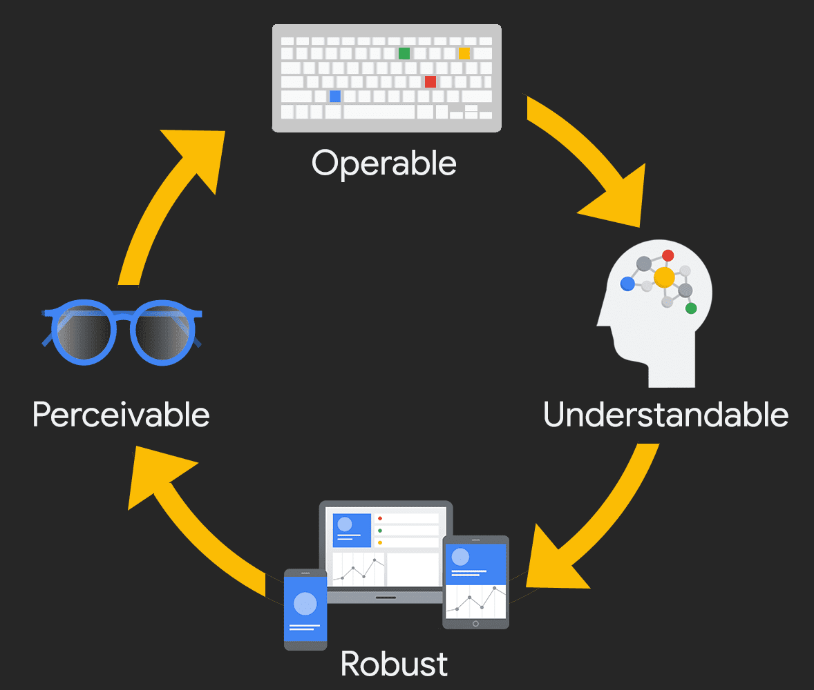

1.
La información y los componentes de la interfaz deben presentarse a los usuarios de manera que puedan percibirlos.
Ejemplo: Usar texto alternativo descriptivo en imágenes para lectores de pantalla.
La accesibilidad web garantiza que personas con discapacidades puedan navegar, entender y interactuar con sitios y aplicaciones web, eliminando barreras que dificultan su acceso.
Promueve la inclusión digital, cumple con normativas legales, mejora la experiencia para todos y amplía el público potencial de un sitio web.
La información y los componentes de la interfaz deben presentarse a los usuarios de manera que puedan percibirlos.
Ejemplo: Usar texto alternativo descriptivo en imágenes para lectores de pantalla.
Los usuarios deben poder interactuar con todos los elementos, sin que haya obstáculos.
Ejemplo: Navegación mediante teclado para personas que no usan mouse.
La información y la operación de la interfaz deben ser fáciles de entender.
Ejemplo: Formularios con instrucciones claras y mensajes de error accesibles.
El contenido debe ser lo suficientemente sólido para que pueda ser interpretado de forma fiable por diferentes agentes de usuario, incluyendo tecnologías asistivas.
Ejemplo: Uso correcto de etiquetas HTML semánticas como: `
